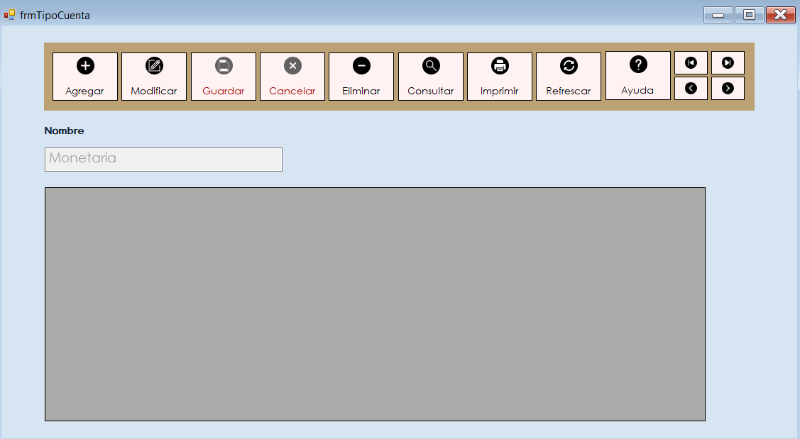

Con el uso del navegador, puede realizar operaciones de cuenta, realizando diferentes tipos de manipulacion de registros, con la identificación de los mismos, puede observar y determinar su status, su tipo y la relación actual que posee.
Selección del tipo de cuenta para el cliente.
El formulario de clientes es una herramienta digital para recopilar información vital de los clientes, como ID , nombre, dirección, correo electrónico, teléfono, DPI y edad. Está diseñado para ser fácil de usar, con campos etiquetados claramente. Una vez completado, los datos se envían para su almacenamiento y facilitan la comunicación y seguimiento con los clientes. Es una herramienta esencial para gestionar eficazmente la base de clientes.
Efectúa una búsqueda en el sistema de Cuentas para encontrar los registros vigentes. Luego, podrá personalizar la información que deseas que aparezca en la tabla de presentación. Si es necesario, podrá realizar modificaciones en los registros según tus requerimientos.
Se completa ingresando el ID de la moneda que se quiera utilizar, así como también su nombre.
Recopila la información de un ID, nombre de la aplicación, descripción y estado de la aplicación. Se permite la edición de estos registros.
Recopila la información de un ID, nombre de la aplicación, descripción y estado de la aplicación. Se permite la edición de estos registros.

Recopila la información de un ID, Información del estado actual y numero del estado. Permite la modificación de estos registros.
Recopila la información de un ID, nombre del módulo, su descripción y estado del módulo. Permite la modificación de estos registros.
Se llena mediante la información del usuario, ingresando los datos necesarios de su cuenta, así como el estado en el que se encuentre. Por último, una pregunta de seguridad y su respuesta en caso de ser necesaria.
Se lleva un registro de todas las transacciones realizadas, permite la modificación de ser necesario, así como la visualización en una tabla demostrativa.